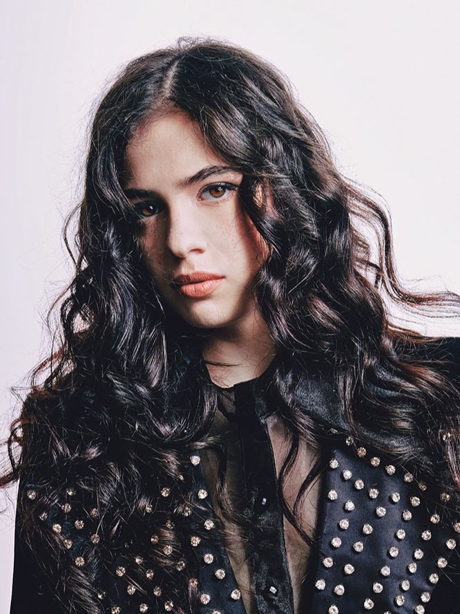

Dora Gaitanovici
Nidle had the chance to collaborate with Dora Gaitanovici out of "pure coincidence" (I don't believe in coincidences). Similar visions, perspectives, same chaotic mind, all of these built the perfect team for working on a few unique pieces.
Artists inspire others. That's what Dora, Dante, Dani and Codruț do: they create, and love doing so. As much as "clothing doesn't matter", the way they dress enhances the way they make the public feel, depending on that they transmit.